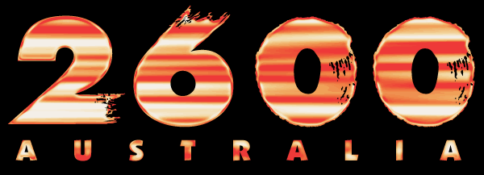

"Hack to learn, not learn to hack"
-[
Main Page
]- -[
Get Involved
]- -[
Mailing List
]- -[
Meeting Locations
]- -[
Archive
]- -[
Projects
]- -[
Links
]-
Links
Whilst 2600 Australia was one of the first public security-minded groups going back to 1999, there has since been a considerable expansion of the security arena in Australia and New Zealand. The following is a list of similar groups and initiatives:
2600 Magazine - The Hacker Quarterly
, Where it all started.
Australian Information Security Association
(AISA)
Risky Business
Security Podcast
Electronic Frontiers Australia
(EFA)
Australian Privacy Foundation
Ruxcon
and Ruxmon
Breakpoint
Hackerspaces
Australian Computer Museum Society
(ACMS)
CryptoAustralia
KiwiCon
2600 NZ
Open Web Application Security Project
(OWASP)
Australian Computer Emergency Response Team
(AusCERT)
WAHCKon
(West Australian Hackers Conference)
Bsides Canberra
If we missed your group, please contact us at
info@2600AU.org
.
-[
Main Page
]- -[
Get Involved
]- -[
Mailing List
]- -[
Meeting Locations
]- -[
Archive
]- -[
Projects
]- -[
Links
]-